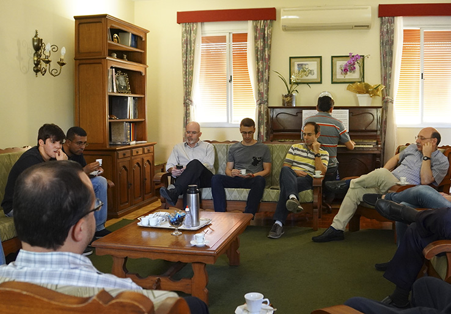
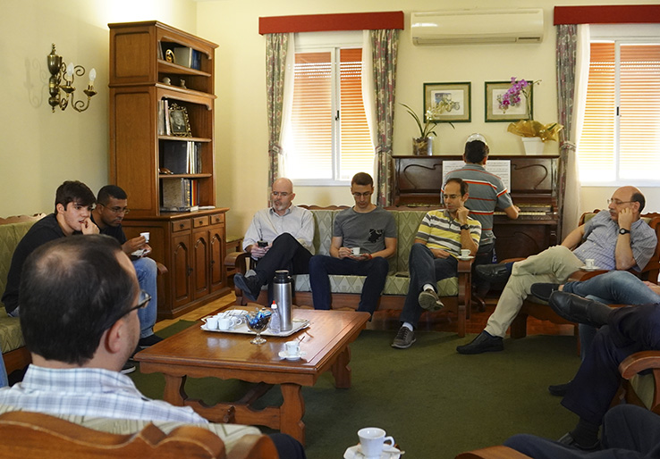

Residência Universitária
O Centro Cultural Esplanada funciona como uma residência universitária, mas que pretende ser muito mais que uma solução de alojamento e alimentação. Aqui há um compromisso em contribuir com a excelência acadêmica e humana.
Com atividades em São José dos Campos desde 1979 e sob a inspiração de São Josemaria Escrivá, fundador do Opus Dei, o Centro Cultural Esplanada oferece uma formação humana integral, contribuindo para o crescimento profissional, pessoal e espiritual de cada um que entra em contato com suas atividades.
 

O Centro Cultural Esplanada funciona como uma residência universitária, mas que pretende ser muito mais que uma solução de alojamento e alimentação. Aqui há um compromisso em contribuir com a excelência acadêmica e humana.

O primeiro objetivo do Centro Cultural Esplanada é a formação integral de todos os rapazes que frequentam seu espaço. Para isso, promove uma série de atividades com o com foco no desenvolvimento humano, cultural, profissional, social e espiritual.

São Josemaria falava do trabalho como "o eixo da santificação", pois é um dos principais meios para a busca da santidade de muitos cristãos. As atividades promovidas para profissionais buscam ajudar o nosso crescimento como cristãos nas atividades do cotidiano, no trabalho profissional, na família e na sociedade.
A direção espiritual consiste em uma conversa particular sobre a vida de oração e a relação com Deus, onde o sacerdote escuta e aconselha o seu dirigido.

Fique por dentro de nossas campanhas econômicas e saiba como colaborar com o CCE.
O Clube 14bis foi criado por pais e educadores, com um projeto pedagógico preciso, visando a promoção de atividades educativas.
Mande uma mensagem para tirar suas dúvidas ou agende uma visita.
Você pode receber no seu bolso as informações sobre as atividades realizadas no Centro Cultural Esplanada.
Quero Participar